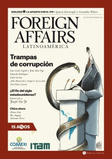

1. Does the Bond Market Discipline State Owned Enterprises? (with Mauricio Jara-Bertin, Sergio G. Lazzarini and Rodrigo Wagner)
2. Turnover and Institutional Logics, manuscript under preparation (with Paul Ferreira, Sergio G. Lazzarini, and Claudia Bruschi)
3. State Ownership Reinvented? Examining Performance Gaps between State-Owned and Private Firms, manuscript, May 2015,
4. State-Owned Enterprises in Brazil: History and Lessons, prepared for the The Working Party on State-Ownership and Privatisation Practices OECD, Paris, 2014 (With Sergio G. Lazzarini)
5. Leviathan in Business: Varieties of State Capitalism and their Implications for Economic Performance(with Sergio G. Lazzarini), SSRN Working paper 2070942
1. New Varieties of State Capitalism: Strategic and Governance Implications, Academy of Management Perspectives 29-1 (2015) (with Sergio G. Lazzarini and Ruth Aguilera).
2. What Do State-Owned Development Banks Do? Evidence from BNDES, 2002-09. World Development 66 (February 2015) (with Sergio G. Lazzarini, Rodrigo Bandeira de Mello, and RosileneMarcon)
3. Governments as Owners: State Owned Multinational Companies, Journal of International Business Studies, 45-9 (2014) (with Alvaro Cuervo-Cazurra, Kannan Ramaswamy, and AndrewInkpen)
4. Leviathan as a Minority Shareholder: Firm-level Implications of Equity Purchases by the State ,Academy of Management Journal 56-6 (December 2013) (with Carlos F. K. V. Inoue and Sergio G. Lazzarini)
5. In Strange Company: The Puzzle of Private Investment in State-Controlled Firms Cornell International Law Journal 46-3 (2013) (With Mariana Pargendler and Sergio G. Lazzarini)
 Latest article on the Petrobras Corruption Scandal in Brazil, in Foreign Affairs Latin America
Interview with the Ivey Business Journal (mostly on SOEs in China and Canada)
Online debate on State Capitalism: Aldo Musacchio vs Ian Bremmer
**A critical review of Ian Bremmer's book G-Zero in Reuters The great Debate blog

 Mapping Frontier Markets (With Eric Werker) Harvard Business Review, December 2016
In this paper we provide a simple framework to aid in the design of successful strategies in frontier markets.
Follow us @frontierecon4 and
Mapping Frontier Markets (With Eric Werker) Harvard Business Review, December 2016
In this paper we provide a simple framework to aid in the design of successful strategies in frontier markets.
Follow us @frontierecon4 and  Reinventing State Capitalism: Leviathan in Business, Brazil and Beyond
Reinventing State Capitalism: Leviathan in Business, Brazil and Beyond